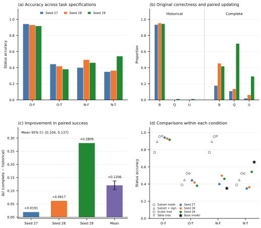

两个实证研究 —— 因果形式化高分的解释边界,以及因果假设变化下的识别状态更新
两个项目共同追问一件事:当一个模型在因果任务上取得高分时,我们凭什么说它具备所声称的能力? 第一个项目构造了一个不做任何算术的受限程序,它在因果形式化任务上取得与微调模型相同的 233/233 满分, 并给出了该程序成功与否的精确数学条件,从而说明这个分数无法区分“一般因果形式化”与“族内模板路由”。 第二个项目把问题推进到假设变化:在证据与目标固定、仅增加一条结果单调性假设的配对设置下, 用冻结模型在 120 个全新实例上做前瞻性确认,并用 B/Q/U 分解把“原题是否答对”与“新假设下是否正确应用”分开。
一个评测分数只记录“输出是否满足判据”,它不说明是哪一种计算产生了这个输出,也不说明 这种成功会延伸到哪。而在因果推断里,这一点尤其要紧:同一个正确答案,既可能来自对潜在结果模型的推导, 也可能来自识别题型、套用模板、把输入数值填进对应位置。
两个项目都选择真值可精确计算的任务:二元工具变量 Z、处理 D、结果 Y,
目标是顺从者平均处理效应 E[Y(1)−Y(0) | D(1)=1, D(0)=0](要求顺从者质量为正)。
识别状态分四类:infeasible / point / partial / unidentified,
参照区间恒为 [−1,1]。这样每一道题都有唯一正确答案,且可用精确有理数线性规划核验。
在一批用于因果形式化的评分样本上,微调后的模型取得了 233/233 满分,而未微调的基座模型是 0/233,打乱配对的负对照同样是 0/233。表面上看,这像是一次干净的“学到了”。
但检查目标本身发现:答案里每一个实例特定数值都能在题目中原样找到,整批题目的结构差异只有 一个比特。于是可以写出一个受限程序:只做模板选择与字段转录, 不对任何实例值做算术,不调用优化器。
结论只能到这一步:该评分允许这个较简单的实现取得同样分数,因此仅凭成绩无法确定模型完成了多大范围的因果形式化。 它不证明模型内部使用了模板,也不否认形式化任务本身的价值。
补充:那套原本用于描述目标“可抄性”的字符串统计量,在做保义重写时被证明不稳定
(把 1/2 写成 3/6,数值重叠从 1.0000 掉到 0.0000),因此最终论证建立在可执行程序之上,
而不是字符串统计量之上。
第二项研究把问题从“原题会不会答”推进到“假设变了,答案会不会跟着变对”。
实验保持观测证据与因果目标不变,只增加一条结果单调性 Y(1) ≥ Y(0) 假设
(它与治疗单调性 D(1) ≥ D(0) 是两个不同的限制)。
| 条件 | 种子 27 | 种子 28 | 种子 29 |
|---|---|---|---|
| 历史规格 · 不施加限制 (O-F) | 905 / 960 | 893 / 960 | 881 / 960 |
| 历史规格 · 施加限制 (O-T) | 426 / 960 | 402 / 960 | 366 / 960 |
| 完整规格 · 显式 false (N-F) | 384 / 960 | 478 / 960 | 443 / 960 |
| 完整规格 · 显式 true (N-T) | 335 / 960 | 349 / 960 | 521 / 960 |
在标准答案真正改变的 470 个题对上,记 F 为原题是否答对、T 为新题是否答对:
B = ΣF / 470 —— 原题正确率Q = ΣFT / ΣF —— 在原题答对之后,新题也答对的条件比例(分母随条件变化)U = ΣFT / 470 —— 两侧同时正确率,且 U = BQ也就是说:失败并不主要表现为“读不懂题”,而表现为原题答对之后,新题很少答对。 进一步的配对检查显示,在原题答对的那部分题里,模型大多重复了它原本给出的那个标签—— 而在新假设下那个标签已经不对了。
换成完整规格后,配对成功率上升:ΔU = +0.1206,95% 实例聚类区间 [+0.1040, +0.1372]
(10,000 次整实例重采样,三种子等权)。但代价同时出现:全 960 题准确率降到
40.0%–49.8%,而且没有一个种子达到预设的 U ≥ 0.60 门槛。
B 与 U 的分母是 470 个变化题对;
Q 的分母是该条件下原题答对的题数。三者不可混用,也不可相互比较。
此外,一个从未见过这条新假设的浅层数值决策树在“不施加限制”的条件下取得 95.3%, 在历史规格下仅落后适配器 1.0–3.5 个百分点;而未微调的基座模型在“施加限制”条件下的单题准确率为 65.6%,高于三个微调适配器。这些对照限定了“高分”能支持的解释范围。

B / Q / U 分解;B 与 U 的分母是 470,
Q 的分母是该条件下原题答对的题数。
(c) ΔU 的逐种子值与三种子等权均值,误差条为 10,000 次整实例重采样的 95% 百分位区间。
(d) 四种冻结规则基线与适配器在各条件下的对照。所有区间条件于这三个已冻结的训练运行,
只反映实例不确定性。
核心结果由一个单入口、免 GPU的复现包重算:它按 SHA256 校验每个记录文件,
重算逐格计数、B/Q/U、行为分类、ΔU 与其聚类区间、以及四种规则基线,
并与冻结参考值比对。它在独立目录中运行,不读取包外文件、不下载、不重新拟合。
NA,同时报告有效重复数。重新生成 20 个预测格需要冻结基座权重、六个适配器与 GPU,这条路径未被重跑,属于文档化而非已验证。